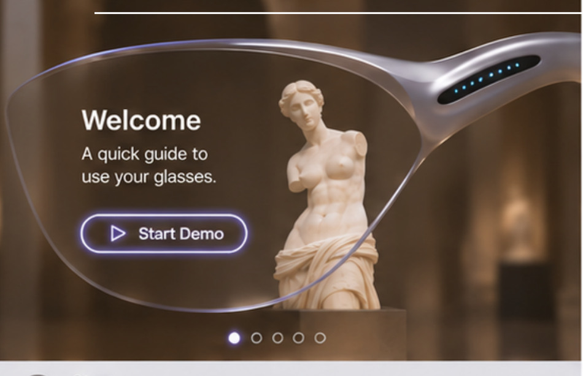
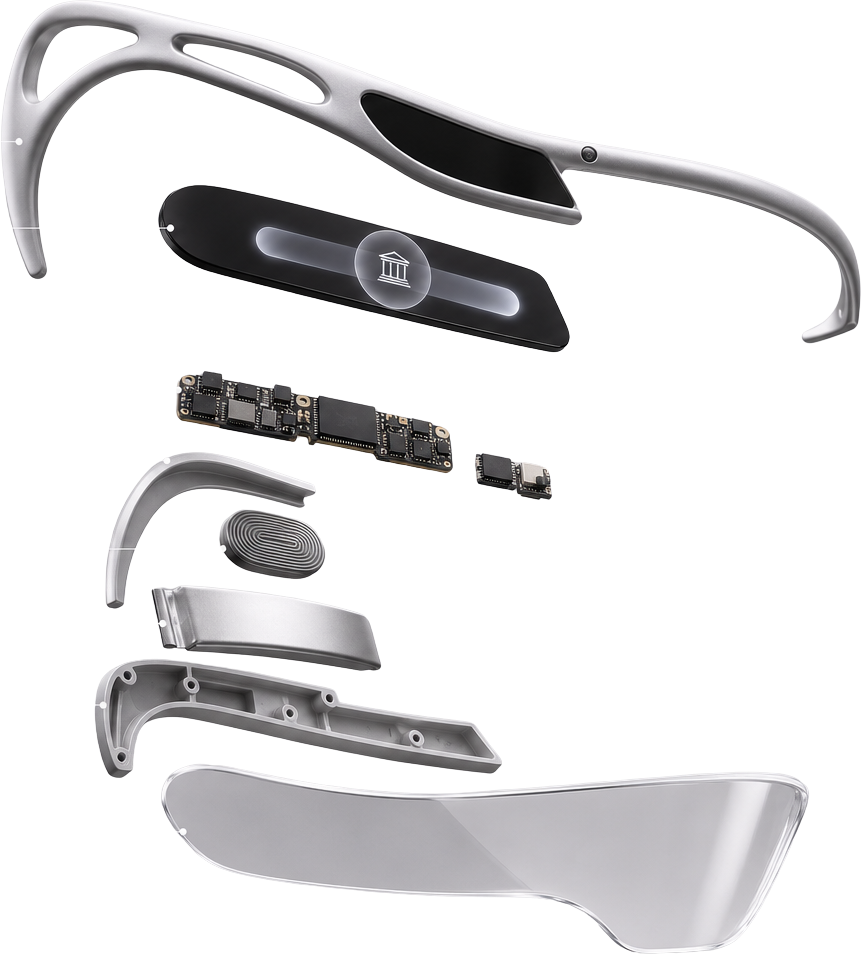

01 / PROTOTYPE PROCESS
Digital placement
Direction, volume and fit around the ear were explored through digital models.

Single-sided AR eyewear
Gaze guidance + the story of that moment.
To guide the visitor’s gaze to the artwork, so that the visitor absorbs it and takes more away from the museum.
Explore the processMuseums add layers to strengthen the experience: headphones, apps, AR. But every layer takes a share of the ~30 seconds a visitor gives an artwork. Absorption comes less from more information than from the quality of looking.
I want museum success to be measured not by how much information is shown, but by what the visitor takes away from the artwork.
Starting point: from Future Museums research to TRACE IV.
Respect for attention becomes a design principle.
An artwork gets ~30 seconds of looking on average; this has barely changed since 2001.
Design for one ~30 s moment; keep any intervention short.
Photographing the whole object reduces memory; zooming in on a detail does not.
Encourage active, detail-focused looking instead of passive capture.
App use is low: download and pairing are barriers (vendor claim: ≤10% of visitors).
Zero setup at the door: no download, pairing or typing numbers.
I found no museum study that directly measures “visitors leave without absorbing the artwork”. This is a hypothesis built from indirect evidence. Viewing-time data come from art museums and are adapted to archaeology.
The core covers everyone; B and C are optional layers on top. The reverse does not work.
CORE / LANGUAGE / DEPTH
Gaze guidance + the story of that moment. Minimum setup.
Multilingual narration chosen at the Station.
Route, notes, personal archive across museums.
Look first. The lens opens only when your gaze is held on the pointed detail, and fades when you look away.
Issued by the museum. Museum knows and controls the device; no check at the door.
You control your data. Only what you saved is transferred; the raw gaze data is deleted at the museum; an account is optional.
Precision Organic: references, sketches and AI-supported form studies.
A flowing main body, controlled edges and defined finishes. Organic form and precision.
Eyewear and wearable references exploring the eye area, ear and temple.
Flowing, organic, teardrop-shaped and asymmetric forms explored in different positions on the face.
AI-supported form studies used to explore the design language and alternative volumes.
Colors / Materials / Finishes
Researching existing eyewear temple designs, exploring users’ perceptions of hygiene, and testing physical prototypes on different people.
Direction, volume and fit around the ear were explored through digital models.
Low-detail models were used to observe volume, fit and contact around the ear.
After researching existing eyewear temple designs, exploring users’ perceptions of hygiene, and testing physical prototypes on different people, I developed my final prototype. The design wraps more securely around the ear without creating a sense of unhygienic contact, while staying true to the Precision Organic design language established in my moodboard.
The final model is not yet shown on this page.
Explore the proposed museum experience in six steps from the original presentation.

CONCEPT SCENARIOA short introduction explains the basic gestures and the museum experience.
USE THE ARROWS OR SELECT A STEP
Get it with a scan: a one-time QR code or e-mail link at the exit. Nothing to install before the visit.

A map of where you looked in the gallery, so you remember how you looked, not just what you saw.
Every artwork you saved, with its “one moment” story.
Keep asking questions about a saved artwork. Answers come only from curator-approved sources, or it says “no source”.
All your visits in one place, across museums.
The proposed app flow includes PDF and email options for saving your collection.
Select a component to explore the original exploded view.

The titanium outer frame forms the organic body of the product.
Front view / Perspective view / Side view / Side view with screen on
TRACE IV envisions a removable prescription layer that adapts its transparent monocular lens to individual visual needs, enabling a more inclusive museum experience without compromising its lightweight, single-sided design.
I designed a dedicated channel to accommodate interchangeable optical lenses.
Removable optical lenses that adhere directly to the transparent lens surface without permanent adhesives.
Gecko-Inspired Anti-Slip Nose Support
A microstructured, skin-compatible contact layer integrated into the transparent nose support to enhance grip and reduce slipping without altering the eyewear’s original form.
Reusable adhesion potential, minimal visual impact, improved grip.
Performance under sweat and skin oils requires validation; hygiene and skin comfort must be tested.
It represents the explorer discovering the stories hidden within historical artifacts and following the traces left behind from the past to the present.
The Roman numeral IV (4) symbolizes the interpretation of time as the fourth dimension.
All original boards are preserved here. Select a page to view it.